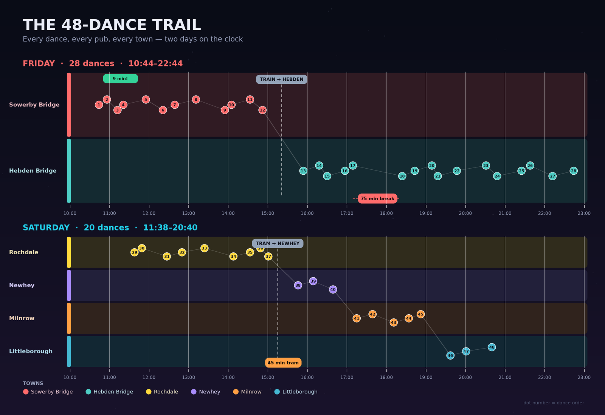
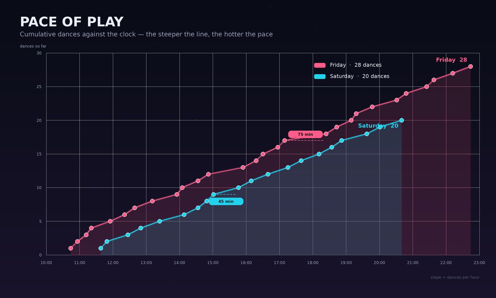
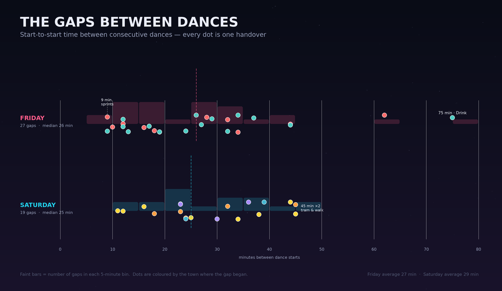
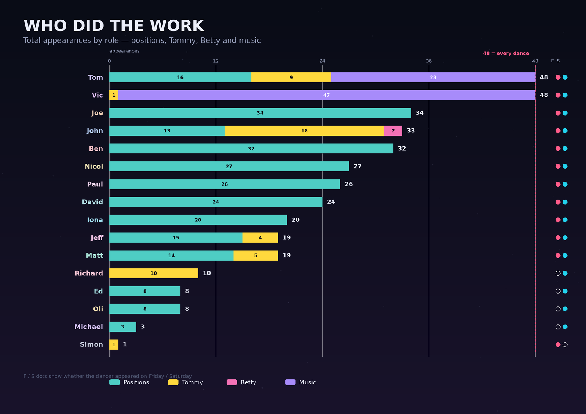
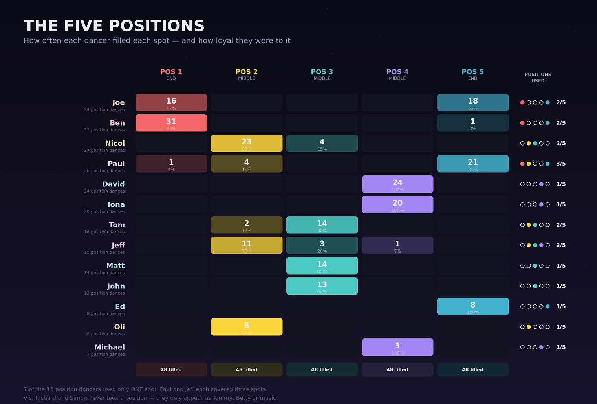
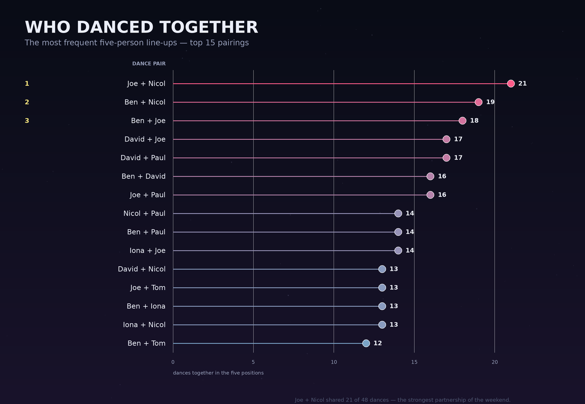
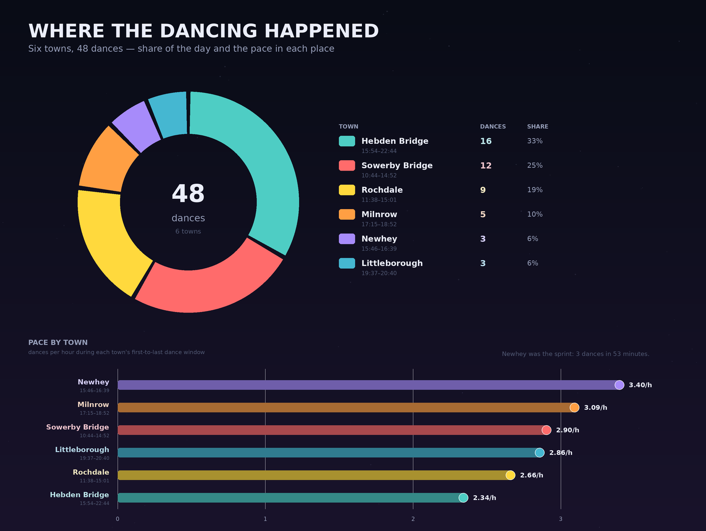
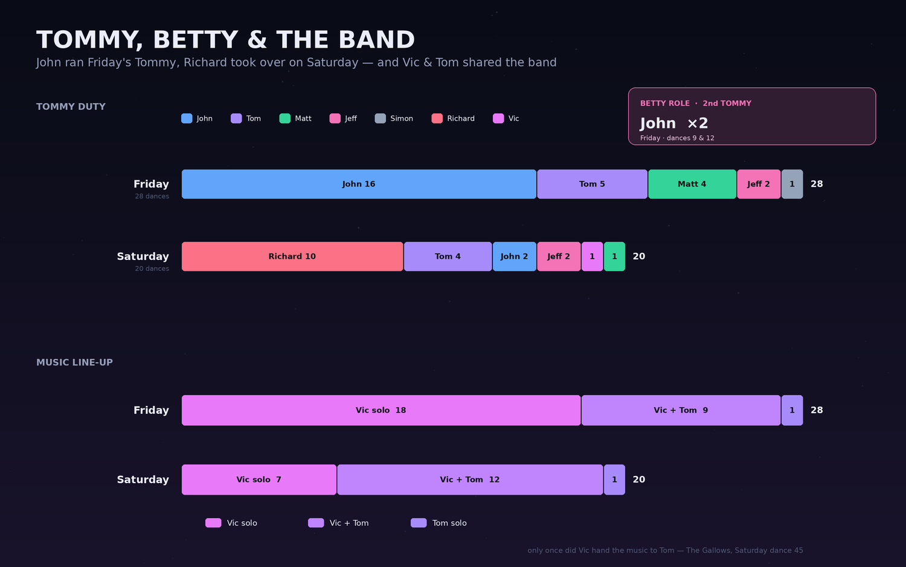

A pub-by-pub look at the timing, the pace, the dancers and the roles behind a 48-dance weekend across six towns in the North.
Fri 10:44–22:44 · 28 dances
Sat 11:38–20:40 · 20 dances
6 towns · 48 pubs
16 named dancers
21h 02m of clock time
48
dances
28 Fri · 20 Sat
2.3
dances / hour
Friday 2.33 · Saturday 2.21
26 min
median handover
Friday 26 · Saturday 25
9 min
fastest gap
twice on Friday
75 min
longest gap
Drink, Friday 17:09–18:24
48
dances for Vic & Tom
in some role, every single time
01The shape of the weekend
The route is two very different days: a long, flat Friday crawl through Sowerby Bridge into Hebden Bridge, then a Saturday that hops between four Pennine towns.

Each numbered dot is one dance. Towns are lanes; the faint line shows the order. Train and tram legs are marked.
Friday was the marathon
28 dances over 12 hours (10:44 to 22:44), split into 12 in Sowerby Bridge (10:44–14:52) and 16 in Hebden Bridge (15:54–22:44), bridged by the 15:21 train.
Saturday was four hops
Rochdale 9 → Newhey 3 → Milnrow 5 → Littleborough 3, with a tram at 15:15 and the last dance at 20:40. Shorter, but more moving parts.
Hebden did the heavy lifting
One third of all dances (16 of 48) happened in Hebden Bridge. Sowerby Bridge supplied another quarter (12).
Two travel legs, about 30 minutes each
The train (Fri 15:21) and tram (Sat 15:15) both land in the middle of the afternoon — the natural hinge of each day.
02Pace, breaks and handovers
The cumulative-dance chart makes the rhythm obvious: a steady climb, one real sit-down break on Friday, and a slower Saturday that never quite catches up (as did their heads).

Cumulative dances against the clock. Steeper line = faster dancing.

Every start-to-start gap. Bars behind the dots show how many gaps fall in each 5-minute bin.
Average handover was 27 minutes (46 gaps), and the overall median was 25.5 minutes. Friday mean 26.7 / median 26; Saturday mean 28.5 / median 25.
Fastest turnarounds were 9 minutes, twice on Friday: The Moorings → Temujin and The Hidden Hebden → The White Swan. A third 10-minute sprint came at Hollins Mill → Loose Goose.
The 75-minute break at Drink (17:09 → 18:24) is the clear outlier — this can be credited to various takeaways across Hedben. The next longest Friday gap is 62 minutes, which includes the train to Hebden.
Saturday's longest gaps were both 45 minutes: Moody Blue → Bird in Hand (the tram to Newhey) and The Gallows → The Queens (the move to Littleborough).
Friday peaked at 3 dances in each of 11:00, 14:00, 16:00 and 19:00; Saturday was flatter, with 14:00 and 18:00 the only 3-dance hours.
03The dancers
Sixteen people appear somewhere in the data, but the workload is not evenly shared. The birthday boy Tom — was present in every one of the 48 dances in some role.

Total appearances, split by positions, Tommy, Betty and music. F/S dots show which day(s) each person appeared.
Tom: 48/48
Tom covered 16 positions, 9 Tommy slots and 23 music slots.
Joe and Ben carried the positions
Joe did 34 position dances and Ben 32. Between them they covered an end in 66 of the 96 end-position slots.
John was the support engine
33 appearances: 13 in position 3, 18 as Tommy and the weekend's only 2 Bettys. He was the busiest person after Vic and Tom.
Day trippers
Simon appeared only on Friday. Oli, Michael, Ed and Richard appeared only on Saturday. Eleven dancers did both days.
04The five positions

Cell numbers are appearances; the percentage is that dancer's share of their position work. Right-hand dots show which of the five spots they used.
7 of the 13 position dancers used only one spot. David, Iona and Michael were exclusively position 4; Matt and John exclusively position 3; Oli exclusively position 2; Ed exclusively position 5.
Ben is the purest end specialist: 31 of his 32 position dances were position 1 (97%). Joe split between the two ends (16 at position 1, 18 at position 5).
Paul and Jeff were the most versatile, covering three positions each. Paul: 1, 2 and 5; Jeff: 2, 3 and 4.
Positions 2, 3 and 4 are dominated by a fixed group — which is why the same pairings recur all weekend.

The most frequent five-person line-ups. Joe + Nicol shared 21 of 48 dances, the strongest partnership of the weekend.
05The places
Hebden Bridge had the most dances but the slowest rhythm. Newhey was the sprint: three dances in 53 minutes.

Share of all 48 dances by town (left) and dances per hour within each town's first-to-last dance window (right).
Newhey: 3.40 dances/hour
Three dances between 15:46 and 16:39 — the fastest town pace of the weekend, and the shortest stop.
Hebden: most dances, slowest pace
16 dances over 6h 50m (2.34/hour). The volume came from a long evening session, not a faster turnover.
Sowerby Bridge: the warm-up
12 dances in 4h 08m (2.90/hour), starting at 10:44 and handing over to Hebden just before 15:00.
Milnrow: a tidy five
Five dances in 1h 37m (3.09/hour) — the second-fastest pace after Newhey.
06Tommy, Betty and the band
The support roles were as organised as the five positions. Tommy duty changed hands between the days, Betty barely appeared, and the music was effectively one person with a very reliable deputy.

Who took the Tommy on each day, and how the music was staffed. Betty (the second Tommy when the field is comma-separated) appeared twice.
Friday belonged to John: 16 of 28 Tommy slots, with Tom (5), Matt (4), Jeff (2) and Simon (1) filling in.
Saturday belonged to Richard: 10 of 20 Tommy slots. Tom (4), John (2), Jeff (2), Vic (1) and Matt (1) completed the rota.
Betty appeared only twice, both on Friday, both John: dances 9 (Hollins Mill) and 12 (The Hog's Head), both while Tom was Tommy.
Vic carried the music in 47 of 48 dances: 25 solo and 22 alongside Tom. The lone exception is dance 45 at The Gallows, where Vic took the Tommy and Tom played music — the weekend's only full role swap.
07By the numbers
Measure
Friday
Saturday
Weekend
Dances
28
20
48
First / last dance
10:44 / 22:44
11:38 / 20:40
10:44 / 22:44
Active span
12h 00m
9h 02m
21h 02m
Dances per hour
2.33
2.21
2.28
Mean gap between starts
26.7 min
28.5 min
27.4 min
Median gap
26 min
25 min
25.5 min
Shortest / longest gap
9 / 75 min
11 / 45 min
9 / 75 min
Unique dancers
12
15
16
Towns danced in
2
4
6
Pubs danced in
28
20
48
Travel legs
Train 15:21
Tram 15:15
2
The one-line version: this is a remarkably disciplined weekend — fixed positions, a stable band, and a handover rhythm of roughly one dance every 27 minutes — punctuated by two travel hops and one proper 75-minute break. If only the drinking was as disciplined. There is no comment on the consistency on the quality of dancing throughout the weekend!
08Method & assumptions
The analysis uses the 50 rows of 40in40.csv: 48 dance rows plus two travel rows. Travel rows (Train to Hebden, Tram to Newhey) are excluded from dance counts but included in the timeline and timing narrative.
Positions 1–5 are treated as five separate dancer appearances. Tommy is counted separately from the five positions. Music is counted separately again.
When the Tommy field is comma-separated (e.g. Tom, John), the first name is the Tommy and the second is the Betty. This happens twice, both on Friday.
When the Music field is comma-separated (e.g. Vic, Tom), it is treated as two musicians. That is why Vic and Tom can each be present in every dance.
Gap = time between consecutive dance start times, so it includes the dance itself plus any changeover or travel. It is not the same as time spent in the pub.
Pace per town = dances divided by the first-to-last dance window in that town, not counting time after the final dance.
Names are treated as unique people. If the Tom in the music column is a different Tom from the position-3 Tom, the “every dance” claim for Tom would not hold.